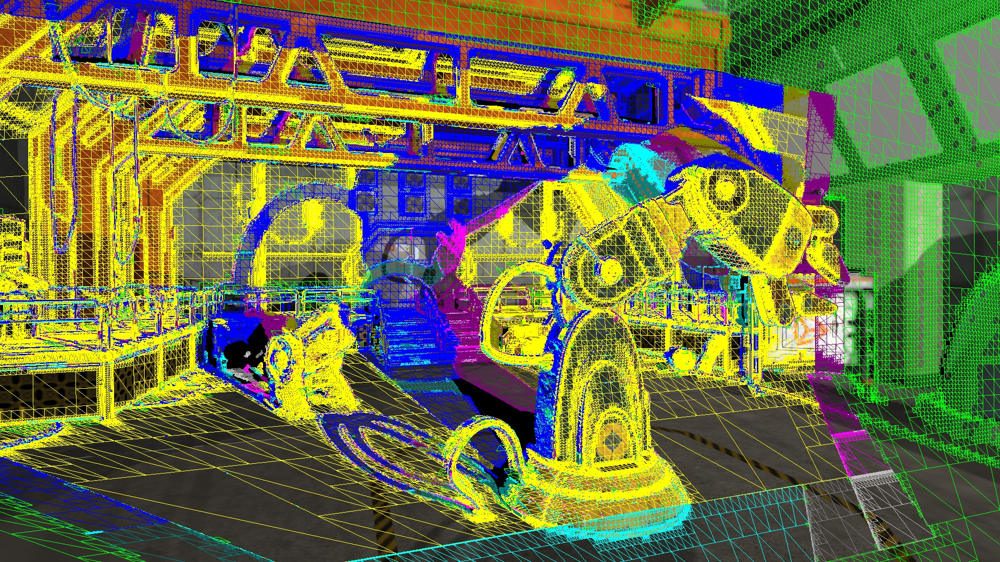

1 MPI Informatik 2 NVIDIA 3 TU Graz 4 University of British Columbia 5 TU Wien
Capturing the scene appearance and geometry into a QuadStream data structure from multiple proxy views sampled from within a view cell. Each proxy view contributes only yet-unseen QuadProxies (depicted as wireframe quads). The QuadProxies are colored based on the proxy view that spawned them. The resulting lightweight datastructure allows fast and accurate novel view reconstruction within the supported view cell.
Streaming rendered 3D content over a network to a thin client device, such as a phone or a VR/AR headset, brings high-fidelity graphics to platforms where it would not normally possible due to thermal, power, or cost constraints. Streamed 3D content must be transmitted with a representation that is both robust to latency and potential network dropouts. Transmitting a video stream and reprojecting to correct for changing viewpoints fails in the presence of disocclusion events; streaming scene geometry and performing high-quality rendering on the client is not possible on limited-power mobile GPUs. To balance the competing goals of disocclusion robustness and minimal client workload, we introduce QuadStream, a new streaming content representation that reduces motion-to-photon latency by allowing clients to efficiently render novel views without artifacts caused by disocclusion events. Motivated by traditional macroblock approaches to video codec design, we decompose the scene seen from positions in a view cell into a series of quad proxies, or view-aligned quads from multiple views. By operating on a rasterized G-Buffer, our approach is independent of the representation used for the scene itself; the resulting QuadStream is an approximate geometric representation of the scene that can be reconstructed by a thin client to render both the current view and nearby adjacent views. Our technical contributions are an efficient parallel quad generation, merging, and packing strategy for proxy views covering potential client movement in a scene; a packing and encoding strategy that allows masked quads with depth information to be transmitted as a frame-coherent stream; and an efficient rendering approach for rendering our QuadStream representation into entirely novel views on thin clients. We show that our approach achieves superior quality compared both to video data streaming methods, and to geometry-based streaming.
@article{10.1145/3550454.3555524,
author = {Hladky, Jozef and Stengel, Michael and Vining, Nicholas and Kerbl, Bernhard and
Seidel, Hans-Peter and Steinberger, Markus},
title = {QuadStream: A Quad-Based Scene Streaming Architecture for Novel Viewpoint
Reconstruction},
year = {2022},
issue_date = {December 2022},
publisher = {Association for Computing Machinery},
address = {New York, NY, USA},
volume = {41},
number = {6},
issn = {0730-0301},
url = {https://doi.org/10.1145/3550454.3555524},
doi = {10.1145/3550454.3555524},
journal = {ACM Trans. Graph.},
month = {nov},
articleno = {233},
numpages = {13}
}